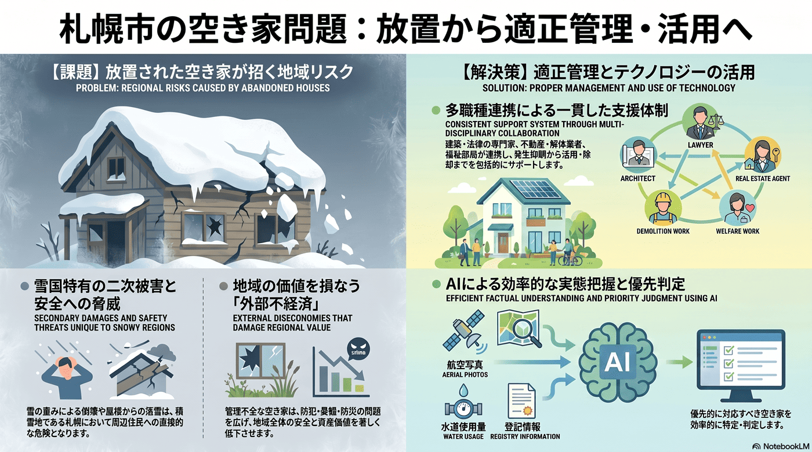

都心再開発・まちづくり
10年以内
空き家の増加と適正管理
管理されない空き家が防災・防犯・景観の問題を広げる。

背景
人口減少と世帯の高齢化が進むと、相続や転居で管理されない空き家が増える。倒壊や雪の落下、防犯上の不安など周辺への外部不経済を生み、特に積雪地では危険が増す。
事実
- 札幌市は適正に管理されていない空き家への対策を検討するため、空家等対策検討委員会を設置し、空家等対策計画を策定している。
解釈
空き家は個人資産の問題に見えて、放置されると地域全体の安全と価値を損なう公共的な課題である。積雪地では雪の重みや落下の危険も加わる。
提案
- 適正管理の促進と特定空家への対応（私権制限との調整が必要）。
- 活用・除却の支援による発生抑制。
検討体制・メンバー
札幌市都市局が空家等対策検討委員会を設置している。検討会には建築・法律（私権と公益の調整）の専門家、不動産・解体事業者、町内会、福祉部局（所有者の高齢・孤立への対応）を加えると、発生抑制から活用・除却まで一貫して扱える。
AIノート
AIの貢献度は中。航空写真・水道使用量・登記などから空き家を効率的に把握・危険度判定でき、優先対応の選別に役立つ。所有者とのマッチングや活用提案にも使えるが、最終的な是正措置は法的手続きと人の対応が必要。